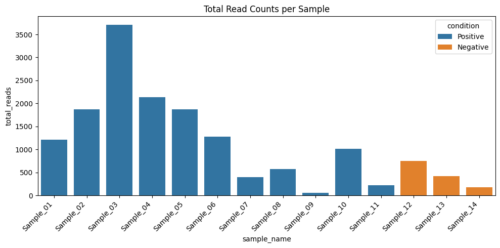

Q&A 1 How do you explore total read counts per sample before normalization?
1.1 Explanation
Before performing any normalization or downstream analysis, it’s important to check the total read counts (library sizes) across all samples. This helps identify:
- ⚠️ Potential outliers or failed libraries
- üìâ Low-coverage samples that might skew differential expression
- üìä Overall distribution differences across conditions
By visualizing total counts per sample, we can assess whether further filtering or batch correction might be necessary.
1.2 Python Code
import pandas as pd
import seaborn as sns
import matplotlib.pyplot as plt
# üîπ Load data
counts = pd.read_csv("data/demo_counts.csv", index_col=0)
metadata = pd.read_csv("data/demo_metadata.csv")
# üîç Compute total counts per sample
total_counts = counts.sum(axis=0).reset_index()
total_counts.columns = ["sample_name", "total_reads"]
# üîó Merge with metadata
plot_data = pd.merge(total_counts, metadata, on="sample_name")
# üìä Barplot
plt.figure(figsize=(10, 5))
sns.barplot(data=plot_data, x="sample_name", y="total_reads", hue="condition")
plt.xticks(rotation=45, ha="right")
plt.title("Total Read Counts per Sample")
plt.tight_layout()
plt.show()
1.3 R Code
library(tidyverse)
# üîπ Load data
counts <- read_csv("data/demo_counts.csv") %>%
column_to_rownames("gene")
metadata <- read_csv("data/demo_metadata.csv")
# üîç Compute total counts per sample
total_reads <- colSums(counts) %>%
enframe(name = "sample_name", value = "total_reads")
# üîó Merge with metadata
plot_data <- left_join(total_reads, metadata, by = "sample_name")
# üìä Barplot
ggplot(plot_data, aes(x = sample_name, y = total_reads, fill = condition)) +
geom_col() +
labs(title = "Total Read Counts per Sample", y = "Total Reads", x = "Sample") +
theme_minimal() +
theme(axis.text.x = element_text(angle = 45, hjust = 1))✅ Takeaway: Exploring total read counts helps detect inconsistencies early. Investigate samples with unusually low or high counts before trusting downstream results.